Case Study #6 - Clique Bait

Introduction
Clique Bait is not like your regular online seafood store - the founder and CEO Danny, was also a part of a digital data analytics team and wanted to expand his knowledge into the seafood industry!
In this case study - you are required to support Danny’s vision and analyse his dataset and come up with creative solutions to calculate funnel fallout rates for the Clique Bait online store.
Available Data
For this case study there is a total of 5 datasets which you will need to combine to solve all of the questions.
Users
Customers who visit the Clique Bait website are tagged via their cookie_id.
| user_id | cookie_id | start_date |
|---|---|---|
| 397 | 3759ff | 2020-03-30 00:00:00 |
| 215 | 863329 | 2020-01-26 00:00:00 |
| 191 | eefca9 | 2020-03-15 00:00:00 |
| 89 | 764796 | 2020-01-07 00:00:00 |
| 127 | 17ccc5 | 2020-01-22 00:00:00 |
| 81 | b0b666 | 2020-03-01 00:00:00 |
| 260 | a4f236 | 2020-01-08 00:00:00 |
| 203 | d1182f | 2020-04-18 00:00:00 |
| 23 | 12dbc8 | 2020-01-18 00:00:00 |
| 375 | f61d69 | 2020-01-03 00:00:00 |
Events
Customer visits are logged in this events table at a cookie_id level and the event_type and page_id values can be used to join onto relevant satellite tables to obtain further information about each event.
The sequence_number is used to order the events within each visit.
| visit_id | cookie_id | page_id | event_type | sequence_number | event_time |
|---|---|---|---|---|---|
| 719fd3 | 3d83d3 | 5 | 1 | 4 | 2020-03-02 00:29:09.975502 |
| fb1eb1 | c5ff25 | 5 | 2 | 8 | 2020-01-22 07:59:16.761931 |
| 23fe81 | 1e8c2d | 10 | 1 | 9 | 2020-03-21 13:14:11.745667 |
| ad91aa | 648115 | 6 | 1 | 3 | 2020-04-27 16:28:09.824606 |
| 5576d7 | ac418c | 6 | 1 | 4 | 2020-01-18 04:55:10.149236 |
| 48308b | c686c1 | 8 | 1 | 5 | 2020-01-29 06:10:38.702163 |
| 46b17d | 78f9b3 | 7 | 1 | 12 | 2020-02-16 09:45:31.926407 |
| 9fd196 | ccf057 | 4 | 1 | 5 | 2020-02-14 08:29:12.922164 |
| edf853 | f85454 | 1 | 1 | 1 | 2020-02-22 12:59:07.652207 |
| 3c6716 | 02e74f | 3 | 2 | 5 | 2020-01-31 17:56:20.777383 |
Event Identifier
The event_identifier table shows the types of events which are captured by Clique Bait’s digital data systems.
| event_type | event_name |
|---|---|
| 1 | Page View |
| 2 | Add to Cart |
| 3 | Purchase |
| 4 | Ad Impression |
| 5 | Ad Click |
Campaign Identifier
This table shows information for the 3 campaigns that Clique Bait has ran on their website so far in 2020.
| campaign_id | products | campaign_name | start_date | end_date |
|---|---|---|---|---|
| 1 | 1-3 | BOGOF - Fishing For Compliments | 2020-01-01 00:00:00 | 2020-01-14 00:00:00 |
| 2 | 4-5 | 25% Off - Living The Lux Life | 2020-01-15 00:00:00 | 2020-01-28 00:00:00 |
| 3 | 6-8 | Half Off - Treat Your Shellf(ish) | 2020-02-01 00:00:00 | 2020-03-31 00:00:00 |
Page Hierarchy
This table lists all of the pages on the Clique Bait website which are tagged and have data passing through from user interaction events.
| page_id | page_name | product_category | product_id |
|---|---|---|---|
| 1 | Home Page | null | null |
| 2 | All Products | null | null |
| 3 | Salmon | Fish | 1 |
| 4 | Kingfish | Fish | 2 |
| 5 | Tuna | Fish | 3 |
| 6 | Russian Caviar | Luxury | 4 |
| 7 | Black Truffle | Luxury | 5 |
| 8 | Abalone | Shellfish | 6 |
| 9 | Lobster | Shellfish | 7 |
| 10 | Crab | Shellfish | 8 |
| 11 | Oyster | Shellfish | 9 |
| 12 | Checkout | null | null |
| 13 | Confirmation | null | null |
Interactive SQL Instance
The Dataset for this case study can be accessed from here. I will be using MySQL to solve this case study. In order to solve yourself this case study, simply go to the above link and choose MySQL Dialect (version > 8, if using MySQL version higher than 8 locally), copy & paste the Database schema into MySQL.
Here is the snapshot of it.
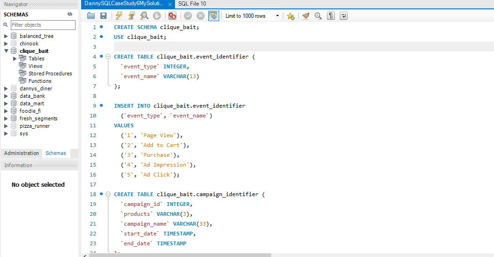
Case Study Questions
1. Enterprise Relationship Diagram
Using the following DDL schema details to create an ERD for all the Clique Bait datasets. Click_Here to access the DB Diagram tool to create the ERD.
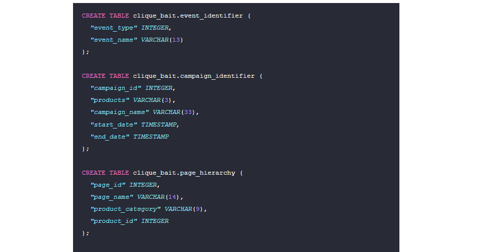
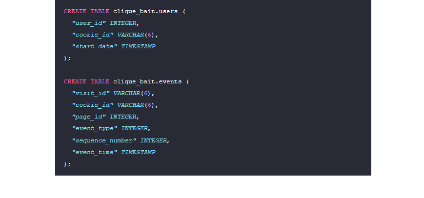
2. Digital Analysis
Using the available datasets - answer the following questions using a single query for each one:
- How many users are there?
- How many cookies does each user have on average?
- What is the unique number of visits by all users per month?
- What is the number of events for each event type?
- What is the percentage of visits which have a purchase event?
- What is the percentage of visits which view the checkout page but do not have a purchase event?
- What are the top 3 pages by number of views?
- What is the number of views and cart adds for each product category?
- What are the top 3 products by purchases?
3. Product Funnel Analysis
Using a single SQL query - create a new output table which has the following details:
- How many times was each product viewed?
- How many times was each product added to cart?
- How many times was each product added to a cart but not purchased (abandoned)?
- How many times was each product purchased?
Additionally, create another table which further aggregates the data for the above points but this time for each product category instead of individual products.
Use your 2 new output tables - answer the following questions:
- Which product had the most views, cart adds and purchases?
- Which product was most likely to be abandoned?
- Which product had the highest view to purchase percentage?
- What is the average conversion rate from view to cart add?
- What is the average conversion rate from cart add to purchase?
4. Campaigns Analysis
Generate a table that has 1 single row for every unique visit_id record and has the following columns:
user_idvisit_idvisit_start_time: the earliestevent_timefor each visitpage_views: count of page views for each visitcart_adds: count of product cart add events for each visitpurchase: 1/0 flag if a purchase event exists for each visitcampaign_name: map the visit to a campaign if thevisit_start_timefalls between thestart_dateandend_dateimpression: count of ad impressions for each visitclick: count of ad clicks for each visit- (Optional column)
cart_products: a comma separated text value with products added to the cart sorted by the order they were added to the cart (hint: use thesequence_number)
Use the subsequent dataset to generate at least 5 insights for the Clique Bait team - bonus: prepare a single A4 infographic that the team can use for their management reporting sessions, be sure to emphasise the most important points from your findings.
Some ideas you might want to investigate further include:
- Identifying users who have received impressions during each campaign period and comparing each metric with other users who did not have an impression event
- Does clicking on an impression lead to higher purchase rates?
- What is the uplift in purchase rate when comparing users who click on a campaign impression versus users who do not receive an impression? What if we compare them with users who just an impression but do not click?
- What metrics can you use to quantify the success or failure of each campaign compared to each other?
Let’s start solving them.
2. Digital Analysis
Using the available datasets - answer the following questions using a single query for each one:
- 1. How many users are there?
Explanation: This SQL query provides the count of unique users in the ‘users’ dataset.
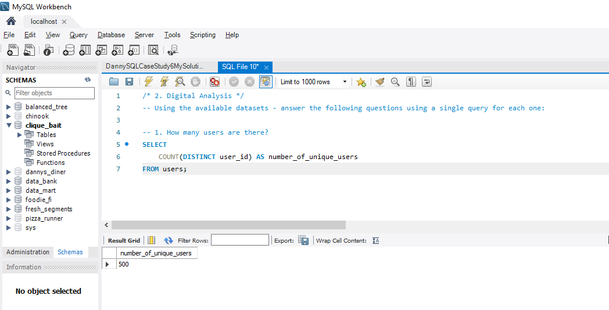
- 2. How many cookies does each user have on average?
Explanation:
This SQL query calculates the average number of cookies per user in the dataset:
1) Calculating Cookie Count per User:
WITH cookie AS (
SELECT user_id, COUNT(cookie_id) AS cookie_count FROM users GROUP BY user_id)Creates a Common Table Expression (CTE) named ‘cookie’ that counts the number of cookies for each user in the ‘users’ table using the COUNT function and grouping by ‘user_id’.
2) Calculating Average Cookie per User:
SELECT ROUND(AVG(cookie_count), 0) AS average_cookie_per_user FROM cookie;Calculates the average number of cookies per user by taking the average of the ‘cookie_count’ column from the ‘cookie’ CTE. The result is rounded to zero decimal places for clarity.
Final Concise Explanation: This SQL query provides the average number of cookies per user in the dataset by counting the cookies for each user and then calculating the overall average.
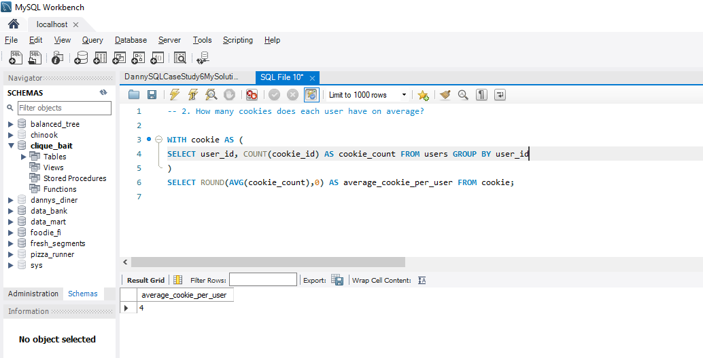
- 3. What is the unique number of visits by all users per month?
Explanation:
This SQL query provides the unique number of visits by all users per month in the ‘events’ dataset by extracting the month from the event timestamp and counting the distinct visit IDs for each month.

- 4. What is the number of events for each event type?
Explantion: This SQL query provides the number of events for each event type by joining the ‘events’ table with the ‘event_identifier’ table, counting the events for each type, and presenting the results ordered by the count of events in descending order.
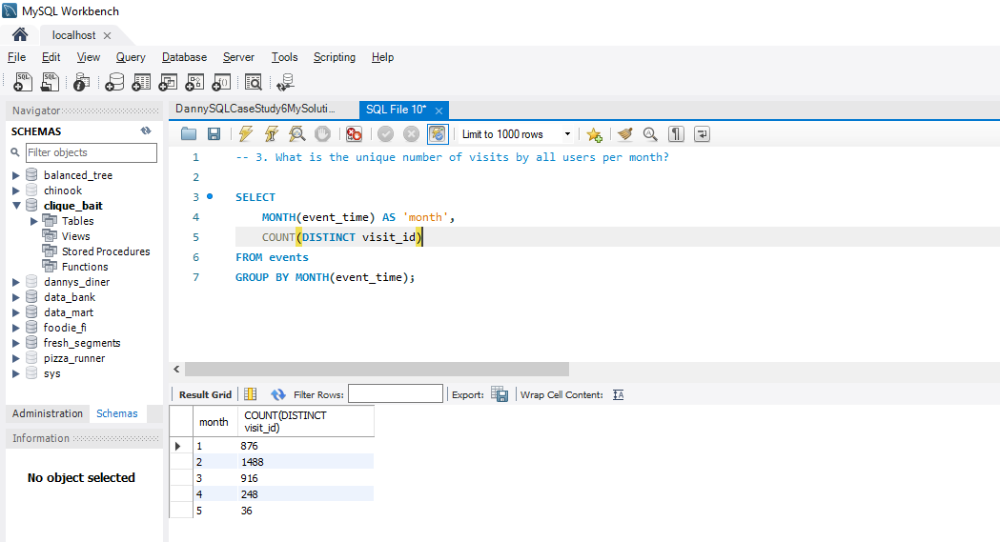
- 5. What is the percentage of visits which have a purchase event?
Explanation:
This SQL query calculates the percentage of visits that have a purchase event. Let’s break it down step by step:
1) Joining Events with Event Identifiers:
FROM events AS E
JOIN event_identifier AS EI ON E.event_type = EI.event_typeJoins the ‘events’ table (aliased as E) with the ‘event_identifier’ table (aliased as EI) based on the common column ‘event_type’. This allows us to associate event types with their corresponding names.
2) Counting Visits with Purchase Events:
COUNT(DISTINCT E.visit_id)Counts the distinct visit IDs from the ‘events’ table (aliased as E) where the event type is associated with a purchase event. This gives the number of visits with at least one purchase event.
3) Calculating the Percentage:
ROUND(100.0 * COUNT(DISTINCT E.visit_id) / (SELECT COUNT(DISTINCT visit_id) FROM events),2)Calculates the percentage by dividing the count of distinct visits with purchase events by the total count of distinct visits from the ‘events’ table. The result is multiplied by 100 and rounded to two decimal places.
4) Filtering for Purchase Events:
WHERE EI.event_name = 'Purchase'Filters the results to consider only events with the name ‘Purchase’. This ensures that only visits with purchase events are included in the calculation.
Final Concise Explanation: The SQL query calculates the percentage of visits that have a purchase event by counting the distinct visits with purchase events, dividing it by the total count of distinct visits, multiplying by 100, and rounding to two decimal places. The query only considers events with the name ‘Purchase’ for the calculation.
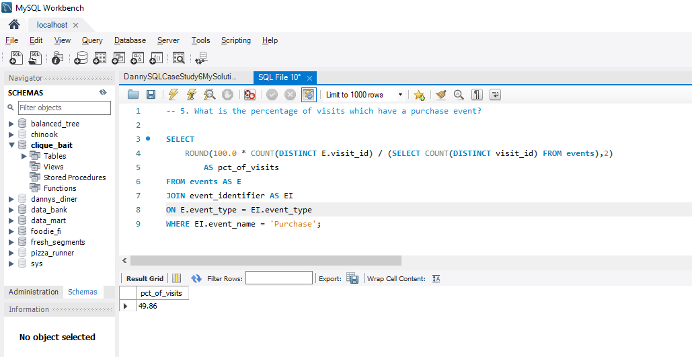
6. What is the percentage of visits which view the checkout page but do not have a purchase event?
7. What are the top 3 pages by number of views?
Explanation:
This SQL query identifies the top 3 pages by the number of views. Let’s break it down step by step:
1) Filtering Relevant Events:
WHERE event_type = '1'Filters events to consider only those with the event type equal to ‘1’. This assumes that event type ‘1’ represents page views.
2) Grouping and Counting Views per Page:
WITH top_3_pages AS
(SELECT page_id, COUNT(DISTINCT visit_id) AS number_of_views
FROM events
WHERE event_type = '1'
GROUP BY page_id
ORDER BY number_of_views DESC
LIMIT 3)Creates a Common Table Expression (CTE) named ‘top_3_pages’ that groups events by page_id, counts the distinct visit IDs for each page, orders the results by the number of views in descending order, and limits the output to the top 3 pages.
3) Joining with Page Hierarchy:
SELECT page_name, number_of_views
FROM top_3_pages
JOIN page_hierarchy ON top_3_pages.page_id = page_hierarchy.page_id;Joins the ‘top_3_pages’ CTE with the ‘page_hierarchy’ table based on the common column ‘page_id’ to get the corresponding page names for the top 3 pages.
Final Concise Explanation: This SQL query identifies the top 3 pages by the number of views by first filtering relevant events (assumed to be page views), grouping and counting views per page, and then joining with the page hierarchy to obtain the page names associated with the top 3 pages.
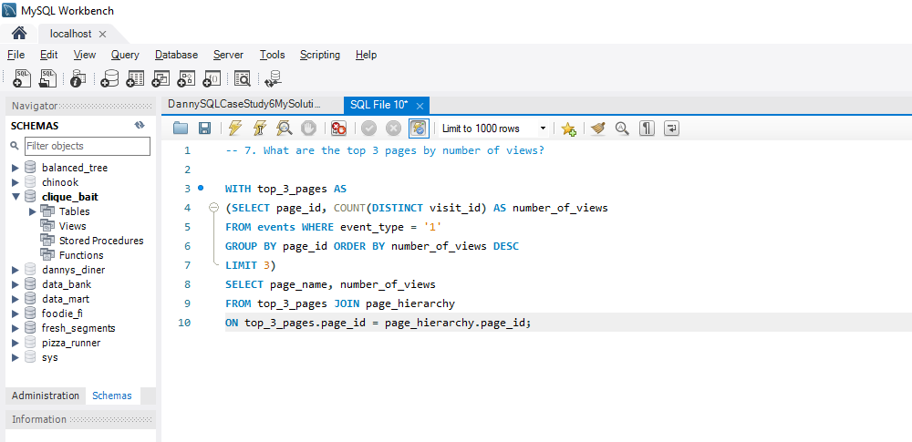
- 8. What is the number of views and cart adds for each product category?
Explanation:
This SQL query calculates the number of views and cart adds for each product category.
1) Joining Events with Page Hierarchy:
FROM events as E JOIN page_hierarchy AS PH ON E.page_id = PH.page_idJoins the ‘events’ table (aliased as E) with the ‘page_hierarchy’ table (aliased as PH) based on the common column ‘page_id’.
2) Filtering Relevant Rows:
WHERE PH.product_category IS NOT NULLFilters the rows to include only those where the product category is not null. This ensures that only events related to products are considered.
3) Counting Views and Cart Adds per Product Category:
SUM(CASE WHEN E.event_type = '1' THEN 1 ELSE 0 END) AS number_of_views,
SUM(CASE WHEN E.event_type = '2' THEN 1 ELSE 0 END) AS number_of_cart_addsUses conditional aggregation to count the number of views and cart adds for each product category. The CASE WHEN statement is used to determine if the event type is a view (event_type = ‘1’) or a cart add (event_type = ‘2’).
4) Grouping by Product Category and Ordering:
GROUP BY PH.product_category
ORDER BY PH.product_category;Groups the results by product category and orders them alphabetically by product category.
Final Concise Explanation: This SQL query calculates the number of views and cart adds for each product category by joining the ‘events’ table with the ‘page_hierarchy’ table, filtering relevant rows, and using conditional aggregation to count the events based on their types. The results are then grouped by product category and ordered alphabetically.
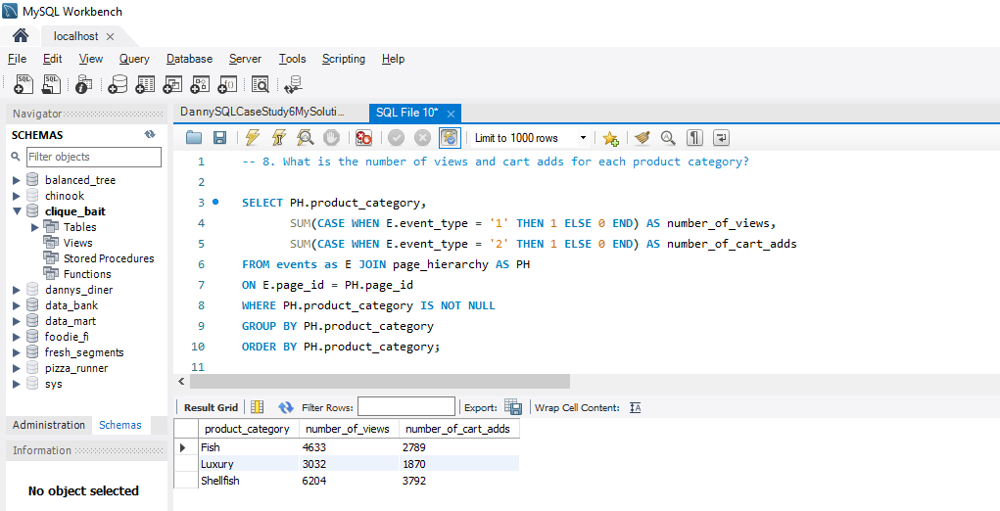
- 9. What are the top 3 products by purchases?
3. Product Funnel Analysis
Using a single SQL query - create a new output table which has the following details:
- How many times was each product viewed?
- How many times was each product added to cart?
- How many times was each product added to a cart but not purchased (abandoned)?
- How many times was each product purchased?
Additionally, create another table which further aggregates the data for the above points but this time for each product category instead of individual products.
Explanation:
This SQL query is the first part of a product funnel analysis. It creates a temporary table (view_add_to_cart_cte) with details about how many times each product was viewed and added to the cart.
1) Creating a Temporary Table:
CREATE TEMPORARY TABLE view_add_to_cart_cte ASCreates a temporary table named view_add_to_cart_cte to store the results.
2) Selecting Relevant Columns and Calculating Counts:
SELECT
PH.product_id,
PH.page_name AS product_name,
PH.product_category,
SUM(CASE WHEN EI.event_name = 'Page View' THEN 1 ELSE 0 END) AS view_counts,
SUM(CASE WHEN EI.event_name = 'Add to Cart' THEN 1 ELSE 0 END) AS add_to_cart_countsSelects the product_id, product_name, product_category, and calculates the counts of page views and add-to-cart events using conditional aggregation.
3) Joining Tables and Filtering:
FROM
events AS E
JOIN event_identifier AS EI ON E.event_type = EI.event_type
JOIN page_hierarchy AS PH ON E.page_id = PH.page_id
WHERE
PH.product_category IS NOT NULLJoins the ‘events’ table with ‘event_identifier’ and ‘page_hierarchy’ tables based on common columns. It filters only rows where the product category is not null, indicating relevant product-related events.
4) Grouping by Product Information:
GROUP BY
PH.product_id, PH.page_name, PH.product_category;Groups the results by product_id, page_name, and product_category to obtain aggregated counts for each product.
Final Concise Explanation: This part of the query creates a temporary table (view_add_to_cart_cte) with details about how many times each product was viewed and added to the cart. It calculates counts for page views and add-to-cart events, filtering for relevant product-related events. The results are grouped by product information.
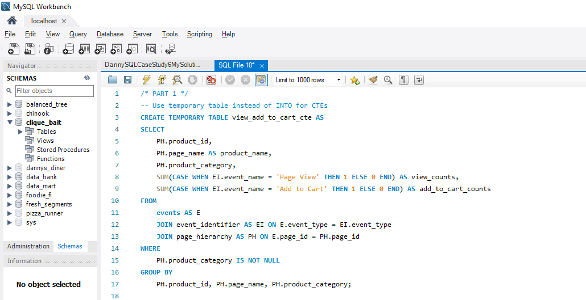
Explanation:
This SQL query is the second part of a product funnel analysis. It creates a temporary table (products_abandoned_cte) with details about how many times each product was added to the cart but not purchased (abandoned).
1) Creating a Temporary Table:
CREATE TEMPORARY TABLE products_abandoned_cte ASCreates a temporary table named products_abandoned_cte to store the results.
2) Selecting Relevant Columns and Calculating Counts:
SELECT
PH.product_id,
PH.page_name AS product_name,
PH.product_category,
COUNT(*) AS abandonedSelects the product_id, product_name, product_category, and calculates the count of abandoned events (add-to-cart events not leading to a purchase).
3) Joining Tables and Filtering:
FROM
events AS E
JOIN event_identifier AS EI ON E.event_type = EI.event_type
JOIN page_hierarchy AS PH ON E.page_id = PH.page_id
WHERE
EI.event_name = 'Add to Cart'
AND E.visit_id NOT IN (
SELECT E.visit_id
FROM events AS E
JOIN event_identifier AS EI ON E.event_type = EI.event_type
WHERE EI.event_name = 'Purchase')Joins the ‘events’ table with ‘event_identifier’ and ‘page_hierarchy’ tables based on common columns. It filters only rows where the event is an ‘Add to Cart’ event and the visit_id is not associated with a ‘Purchase’ event.
4) Grouping by Product Information:
GROUP BY
PH.product_id, PH.page_name, PH.product_category;Groups the results by product_id, page_name, and product_category to obtain aggregated counts of abandoned events for each product.
Final Concise Explanation: This part of the query creates a temporary table (products_abandoned_cte) with details about how many times each product was added to the cart but not purchased (abandoned). It calculates counts for abandoned events, filtering for add-to-cart events not associated with a purchase. The results are grouped by product information.
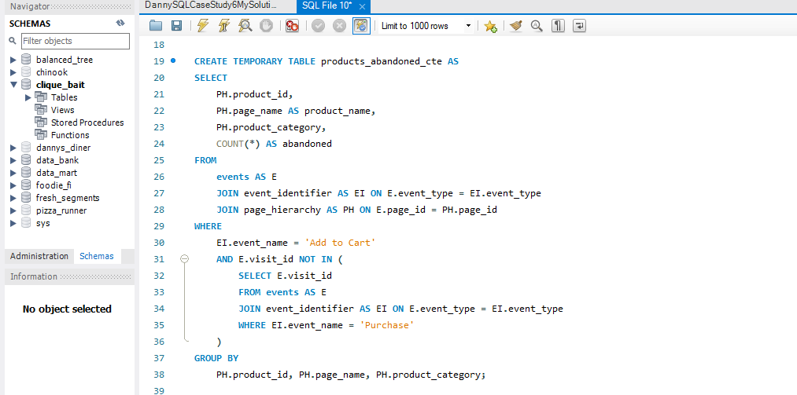
Explanation:
This SQL query is the third part of a product funnel analysis. It creates a temporary table (products_purchased_cte) with details about how many times each product was purchased.
1) Creating a Temporary Table:
CREATE TEMPORARY TABLE products_purchased_cte ASCreates a temporary table named products_purchased_cte to store the results.
2) Selecting Relevant Columns and Calculating Counts:
SELECT
PH.product_id,
PH.page_name AS product_name,
PH.product_category,
COUNT(*) AS purchasedSelects the product_id, product_name, product_category, and calculates the count of purchased events (add-to-cart events leading to a purchase).
3) Joining Tables and Filtering:
FROM
events AS E
JOIN event_identifier AS EI ON E.event_type = EI.event_type
JOIN page_hierarchy AS PH ON E.page_id = PH.page_id
WHERE
EI.event_name = 'Add to Cart'
AND E.visit_id IN (
SELECT E.visit_id
FROM events AS E
JOIN event_identifier AS EI ON E.event_type = EI.event_type
WHERE EI.event_name = 'Purchase')Joins the ‘events’ table with ‘event_identifier’ and ‘page_hierarchy’ tables based on common columns. It filters only rows where the event is an ‘Add to Cart’ event and the visit_id is associated with a ‘Purchase’ event.
4) Grouping by Product Information:
GROUP BY
PH.product_id, PH.page_name, PH.product_category;Groups the results by product_id, page_name, and product_category to obtain aggregated counts of abandoned events for each product.
Final Concise Explanation: This part of the query creates a temporary table (products_purchased_cte) with details about how many times each product was purchased. It calculates counts for purchased events, filtering for add-to-cart events associated with a purchase. The results are grouped by product information.
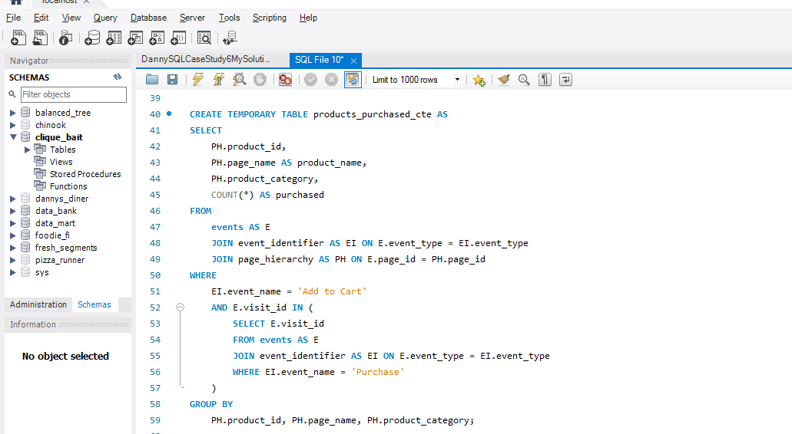
Explanation:
This SQL query combines the results from the previous temporary tables (view_add_to_cart_cte, products_abandoned_cte, products_purchased_cte) into a final temporary table (product_information). It then selects and displays the contents of the final temporary table.
1) Creating a Temporary Table:
CREATE TEMPORARY TABLE product_information ASCreates a temporary table named product_information to store the results.
2) Selecting and Joining Tables:
SELECT
VATC.*,
AB.abandoned,
PP.purchased
FROM
view_add_to_cart_cte AS VATC
JOIN products_abandoned_cte AS AB ON VATC.product_id = AB.product_id
JOIN products_purchased_cte AS PP ON VATC.product_id = PP.product_id;Selects columns from the
view_add_to_cart_cteand joins it with theproducts_abandoned_cteandproducts_purchased_ctetables based on the common columnproduct_id.Combines information about the number of views, cart additions, abandoned events, and purchased events for each product.
3) Selecting from the Temporary Table:
SELECT * FROM product_information
ORDER BY product_id;- Selects and displays all columns from the final temporary table (
product_information). - Orders the results by
product_idfor better readability.
4) Grouping by Product Information:
GROUP BY
PH.product_id, PH.page_name, PH.product_category;Groups the results by product_id, page_name, and product_category to obtain aggregated counts of abandoned events for each product.
5) Dropping Temporary Tables:
DROP TEMPORARY TABLE IF EXISTS view_add_to_cart_cte, products_abandoned_cte, products_purchased_cte;This SQL query drops the temporary tables (view_add_to_cart_cte, products_abandoned_cte, products_purchased_cte) when they are no longer needed.
Final Concise Explanation: This query combines the results from the previous temporary tables (view_add_to_cart_cte, products_abandoned_cte, products_purchased_cte) into a final temporary table named product_information. It includes information about the number of views, cart additions, abandoned events, and purchased events for each product. The final results are then selected and displayed from the temporary table, ordered by product_id.
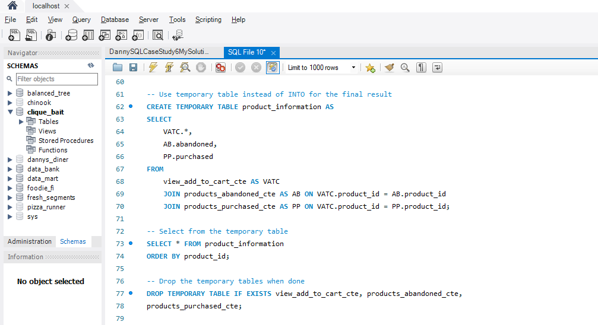
Explanation:
This SQL query creates a temporary table (category_view_add_to_cart_cte) to aggregate data for each product category instead of individual products.
1) Aggregating Data by Product Category:
-- Use temporary table instead of INTO for CTEs
CREATE TEMPORARY TABLE category_view_add_to_cart_cte AS
SELECT
PH.product_category,
SUM(CASE WHEN EI.event_name = 'Page View' THEN 1 ELSE 0 END) AS view_counts,
SUM(CASE WHEN EI.event_name = 'Add to Cart' THEN 1 ELSE 0 END) AS add_to_cart_counts
FROM
events AS E
JOIN event_identifier AS EI ON E.event_type = EI.event_type
JOIN page_hierarchy AS PH ON E.page_id = PH.page_id
WHERE
PH.product_category IS NOT NULL
GROUP BY
PH.product_category;Step-by-Step Explanation:
1) Temporary Table Creation:
- CREATE TEMPORARY TABLE category_view_add_to_cart_cte: Initiates the creation of a temporary table named category_view_add_to_cart_cte.2) Data Selection and Aggregation:
- SELECT PH.product_category: Selects the product_category column from the page_hierarchy table.
- SUM(CASE WHEN EI.event_name = 'Page View' THEN 1 ELSE 0 END) AS view_counts: Calculates the total number of page views (view_counts) for each product category.
- SUM(CASE WHEN EI.event_name = 'Add to Cart' THEN 1 ELSE 0 END) AS add_to_cart_counts: Calculates the total number of "Add to Cart" events (add_to_cart_counts) for each product category.3) Table Joins:
- FROM events AS E: Specifies the events table with the alias E.
- JOIN event_identifier AS EI ON E.event_type = EI.event_type: Joins the event_identifier table using the event_type.
- JOIN page_hierarchy AS PH ON E.page_id = PH.page_id: Joins the page_hierarchy table using the page_id.4) Filtering by Product Category:
- WHERE PH.product_category IS NOT NULL: Filters out rows where the product category is null, focusing on valid product categories.5) Grouping by Product Category:
- GROUP BY PH.product_category: Groups the results by product category, ensuring that each row represents a unique product category.Final Concise Explanation: This query creates a temporary table (category_view_add_to_cart_cte) that summarizes data for each product category. It calculates the total number of page views and “Add to Cart” events for each product category, providing a higher-level analysis of user interactions within different product categories.
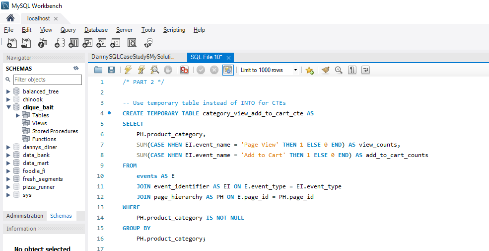
Explanation:
This SQL query creates a temporary table (category_products_abandoned_cte) that counts the number of abandoned products for each product category.
1) Creating Table for Abandoned Products by Category:
-- Use temporary table instead of INTO for CTEs
CREATE TEMPORARY TABLE category_products_abandoned_cte AS
SELECT
PH.product_category,
COUNT(*) AS abandoned
FROM
events AS E
JOIN event_identifier AS EI ON E.event_type = EI.event_type
JOIN page_hierarchy AS PH ON E.page_id = PH.page_id
WHERE
EI.event_name = 'Add to Cart'
AND E.visit_id NOT IN (
SELECT E.visit_id
FROM events AS E
JOIN event_identifier AS EI ON E.event_type = EI.event_type
WHERE EI.event_name = 'Purchase'
)
GROUP BY
PH.product_category;Step-by-Step Explanation:
1) Temporary Table Creation:
- CREATE TEMPORARY TABLE category_products_abandoned_cte: Initiates the creation of a temporary table named category_products_abandoned_cte.2) Data Selection and Aggregation:
- SELECT PH.product_category: Selects the product_category column from the page_hierarchy table.
- COUNT(*) AS abandoned: Counts the number of rows (abandoned products) for each product category.3) Table Joins:
- FROM events AS E: Specifies the events table with the alias E.
- JOIN event_identifier AS EI ON E.event_type = EI.event_type: Joins the event_identifier table using the event_type.
- JOIN page_hierarchy AS PH ON E.page_id = PH.page_id: Joins the page_hierarchy table using the page_id.4) Filtering by Event Type and Excluding Purchased Visits:
- WHERE EI.event_name = 'Add to Cart': Filters rows where the event is an "Add to Cart" event.
- AND E.visit_id NOT IN (...): Excludes visits where a purchase event has occurred, preventing counting products that were eventually purchased.5) Grouping by Product Category:
- GROUP BY PH.product_category: Groups the results by product category, ensuring that each row represents a unique product category.Final Concise Explanation: This query creates a temporary table (category_products_abandoned_cte) that counts the number of abandoned products for each product category. It focuses on “Add to Cart” events and excludes visits where a purchase event has occurred, providing insights into the abandonment behavior within different product categories.
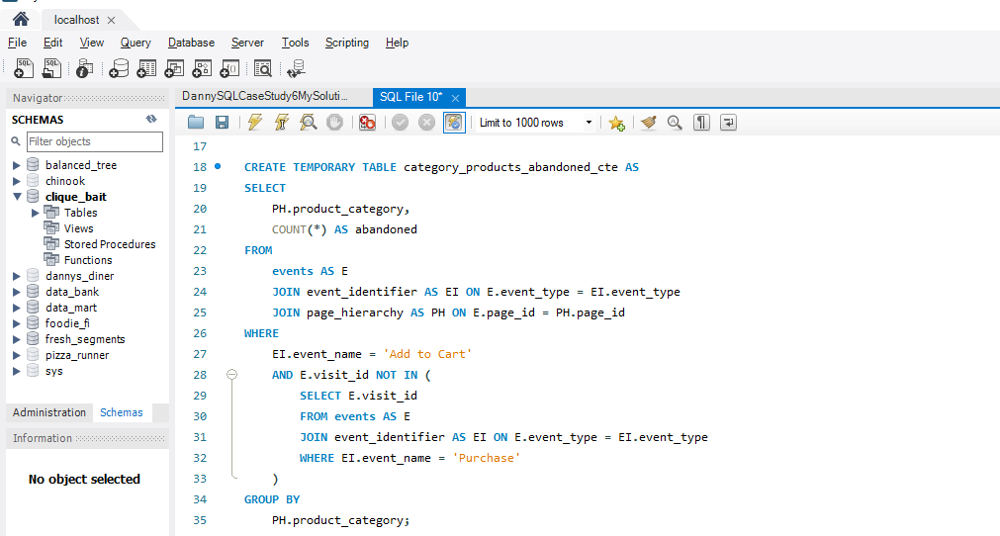
Explanation:
This SQL query creates a temporary table (category_products_purchased_cte) that counts the number of purchased products for each product category.
1) Creating Table for Purchased Products by Category:
-- Use temporary table instead of INTO for CTEs
CREATE TEMPORARY TABLE category_products_purchased_cte AS
SELECT
PH.product_category,
COUNT(*) AS purchased
FROM
events AS E
JOIN event_identifier AS EI ON E.event_type = EI.event_type
JOIN page_hierarchy AS PH ON E.page_id = PH.page_id
WHERE
EI.event_name = 'Add to Cart'
AND E.visit_id IN (
SELECT E.visit_id
FROM events AS E
JOIN event_identifier AS EI ON E.event_type = EI.event_type
WHERE EI.event_name = 'Purchase'
)
GROUP BY
PH.product_category;Step-by-Step Explanation:
1) Temporary Table Creation:
- CREATE TEMPORARY TABLE category_products_purchased_cte: Initiates the creation of a temporary table named category_products_purchased_cte.2) Data Selection and Aggregation:
- SELECT PH.product_category: Selects the product_category column from the page_hierarchy table.
- COUNT(*) AS purchased: Counts the number of rows (purchased products) for each product category.3) Table Joins:
- FROM events AS E: Specifies the events table with the alias E.
- JOIN event_identifier AS EI ON E.event_type = EI.event_type: Joins the event_identifier table using the event_type.
- JOIN page_hierarchy AS PH ON E.page_id = PH.page_id: Joins the page_hierarchy table using the page_id.4) Filtering by Event Type and Including Purchased Visits:
- WHERE EI.event_name = 'Add to Cart': Filters rows where the event is an "Add to Cart" event.
- AND E.visit_id IN (...): Includes visits where a purchase event has occurred, ensuring that only products added to the cart and later purchased are counted.5) Grouping by Product Category:
- GROUP BY PH.product_category: Groups the results by product category, ensuring that each row represents a unique product category.Final Concise Explanation: This query creates a temporary table (category_products_purchased_cte) that counts the number of purchased products for each product category. It focuses on “Add to Cart” events and includes visits where a purchase event has occurred, providing insights into the products that were added to the cart and eventually purchased within different product categories.
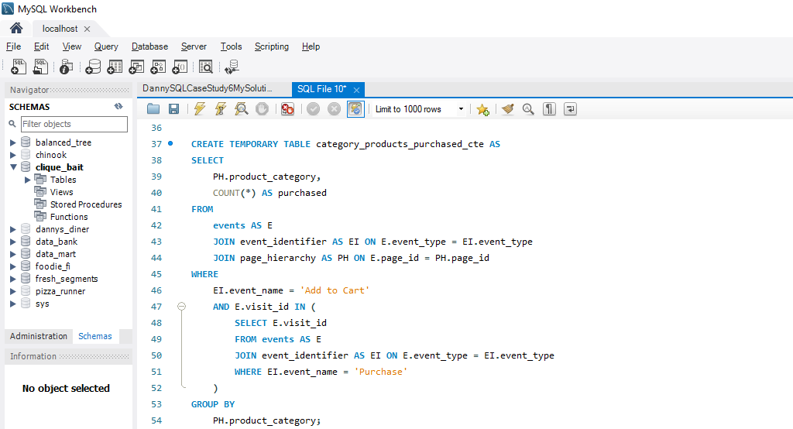
Explanation:
This SQL query creates a temporary table (category_product_information) that aggregates information about product categories, including the number of views, additions to cart, abandoned products, and purchased products.
1) Creating Table for Aggregated Category Product Information:
-- Use temporary table instead of INTO for the final result
CREATE TEMPORARY TABLE category_product_information AS
SELECT
VATC.*,
AB.abandoned,
PP.purchased
FROM
category_view_add_to_cart_cte AS VATC
JOIN category_products_abandoned_cte AS AB ON VATC.product_category = AB.product_category
JOIN category_products_purchased_cte AS PP ON VATC.product_category = PP.product_category;
-- Select from the temporary table
SELECT * FROM category_product_information
ORDER BY product_category;
-- Drop the temporary tables when done
DROP TEMPORARY TABLE IF EXISTS category_view_add_to_cart_cte, category_products_abandoned_cte,
category_products_purchased_cte;Step-by-Step Explanation:
1) Temporary Table Creation:
- CREATE TEMPORARY TABLE category_product_information: Initiates the creation of a temporary table named category_product_information.2) Data Selection and Joining Tables:
- SELECT PH.product_category: Selects the product_category column from the page_hierarchy table.
- COUNT(*) AS purchased: Counts the number of rows (purchased products) for each product category.3) Table Joins:
- FROM category_view_add_to_cart_cte AS VATC: Specifies the temporary table category_view_add_to_cart_cte with the alias VATC.
- JOIN category_products_abandoned_cte AS AB ON VATC.product_category = AB.product_category: Joins the temporary table with the abandoned products table based on the product_category.
- JOIN category_products_purchased_cte AS PP ON VATC.product_category = PP.product_category: Joins the temporary table with the purchased products table based on the product_category.4) Final Result:
- The resulting temporary table (category_product_information) contains aggregated information for each product category, including the number of views, additions to cart, abandoned products, and purchased products.5) Selection from Temporary Table:
- SELECT * FROM category_product_information ORDER BY product_category;: Retrieves all columns from the temporary table, ordering the results by product_category.6) Temporary Table Cleanup:
- DROP TEMPORARY TABLE IF EXISTS category_view_add_to_cart_cte, category_products_abandoned_cte, category_products_purchased_cte;: Drops the temporary tables used in the process.Final Concise Explanation: This query creates a temporary table (category_product_information) that aggregates information about product categories, including the number of views, additions to cart, abandoned products, and purchased products. The temporary table is then selected, providing a summary of product category data, and the temporary tables are dropped when the process is completed.
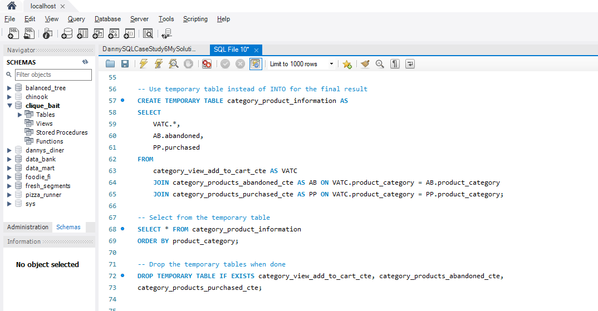
Use your 2 new output tables - answer the following questions:
- 1. Which product had the most views, cart adds and purchases?
Part 1
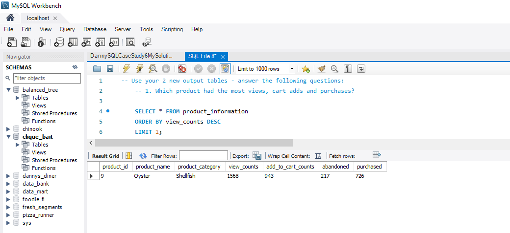
Part 2
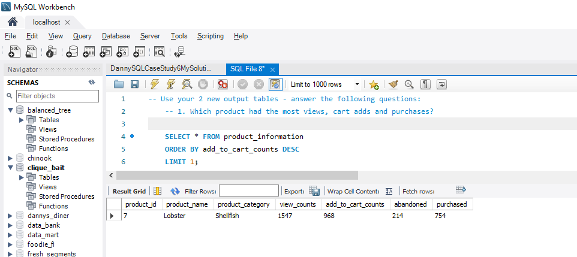
Part 3
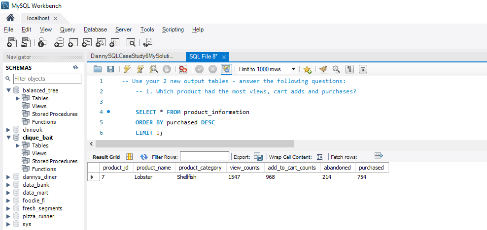
- 2. Which product was most likely to be abandoned?
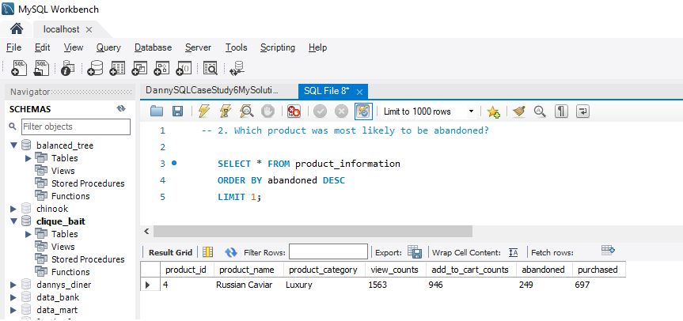
- 3. Which product had the highest view to purchase percentage?
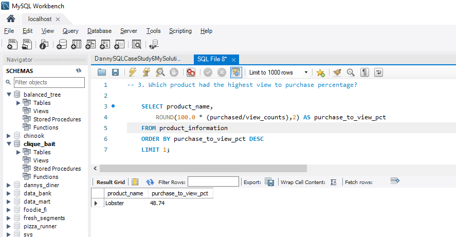
- 4. What is the average conversion rate from view to cart add?
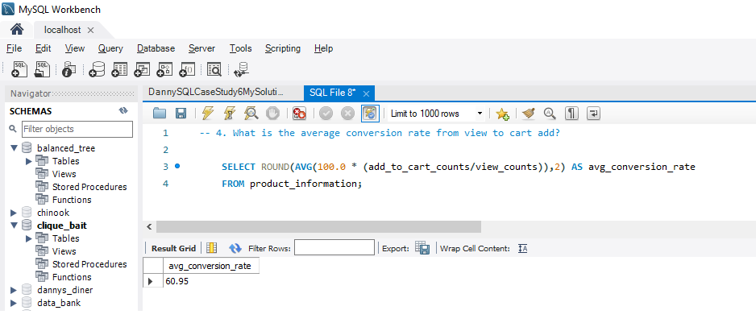
- 5. What is the average conversion rate from cart add to purchase?
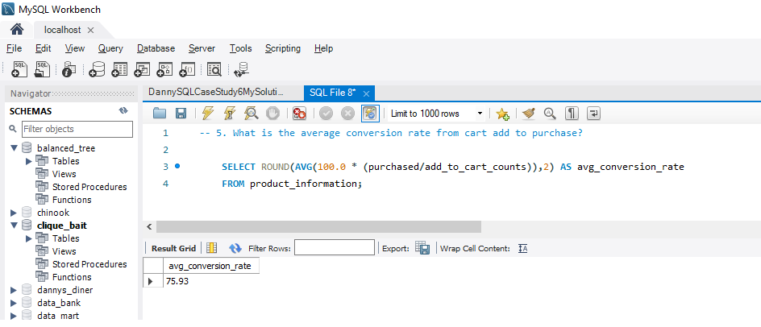
4. Campaigns Analysis
Generate a table that has 1 single row for every unique visit_id record and has the following columns:
user_idvisit_idvisit_start_time: the earliestevent_timefor each visitpage_views: count of page views for each visitcart_adds: count of product cart add events for each visitpurchase: 1/0 flag if a purchase event exists for each visitcampaign_name: map the visit to a campaign if thevisit_start_timefalls between thestart_dateandend_dateimpression: count of ad impressions for each visitclick: count of ad clicks for each visit- (Optional column)
cart_products: a comma separated text value with products added to the cart sorted by the order they were added to the cart (hint: use thesequence_number)
Use the subsequent dataset to generate at least 5 insights for the Clique Bait team - bonus: prepare a single A4 infographic that the team can use for their management reporting sessions, be sure to emphasise the most important points from your findings.
Some ideas you might want to investigate further include:
- Identifying users who have received impressions during each campaign period and comparing each metric with other users who did not have an impression event
- Does clicking on an impression lead to higher purchase rates?
- What is the uplift in purchase rate when comparing users who click on a campaign impression versus users who do not receive an impression? What if we compare them with users who just an impression but do not click?
- What metrics can you use to quantify the success or failure of each campaign compared to each other?